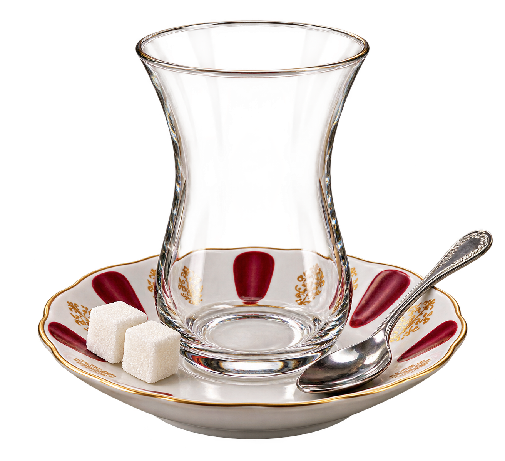

ÇAY USTALARI ARENASI
Çayı Tam Zamanında Durdur
Önce skor tablosunda görünecek takma adını belirle.
HOŞ GELDİN,
İdeal seviyeyi yakala!
Çay bardağa dolarken tam yeşil alanda durdur. Her oyunda dolma hızı değişir.
0.0
İdeal seviyeyi yakala
İDEAL

İdeal alanın ortasına ne kadar yakınsan puanın o kadar yüksek olur.
SONUÇ
Usta işi çay!
96/ 100
Dem Ustası
ÇAY USTALARI
Skor Tablosu
Skorlar yükleniyor
Henüz kaydedilmiş skor yok. İlk çay ustası sen ol!
Her oyuncunun yalnızca en yüksek puanı gösterilir.